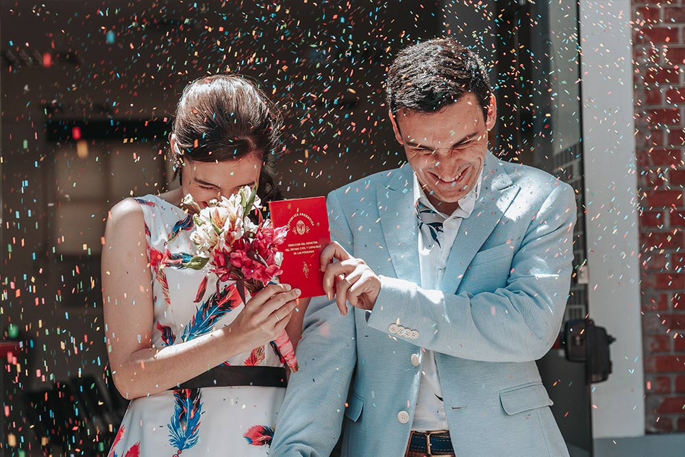

Producciones Lugano
Pre-Boda
Es muy importante para nosotros y lo será para ustedes, ya que nos permite conocernos y establecer un pequeño vínculo, que hará además que pierdan el miedo a las cámaras y que el día del evento todo fluya mucho mejor. Vamos a compartir un momento descontracturado mientras retratamos los gestos y miradas que los une con total naturalidad. SERÁ INOLVIDABLE
El Civil
Vamos calentando motores con la ceremonia del Civil, un momento familiar y de amigos, retratando miradas, alegrías y reencuentros, mientras se acerca el momento del arroz. Antes de irnos, hacemos una pequeña sesión en el registro civil o alrededores.
Ceremonia
Ya sea religiosa o simbólica, durante el día o durante la noche, en un recinto o al aire libre, la ceremonia será uno de los momentos más importantes del casamiento. Estaremos presentes en cada detalle, la decoración, la llegada de los invitados, los nervios del novio en la espera de la novia, las risas, las miradas, las emociones, las cosas verdaderas e inesperadas, serán nuestra inspiración para registrar cada imagen.